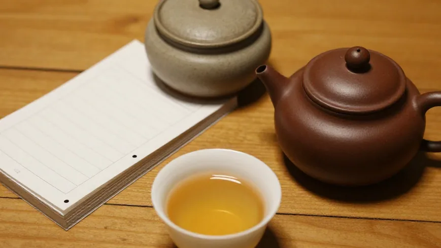
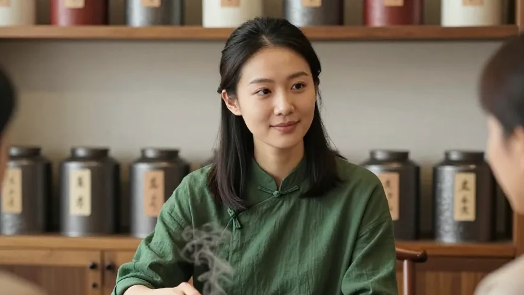
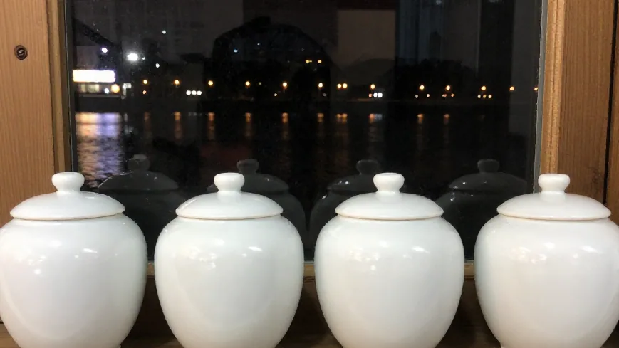

十月的惠州，早晚终于有了点凉意。阿凤姐把四个小茶罐摆在茶桌上——春、夏、秋、冬，像是给整个茶室做了一次季节交割。「喝茶养生这事，最忌讳的就是一年四季喝同一种茶。」
🌿 开篇问答：四季茶饮到底怎么喝、怎么卖？
Q1：四季茶饮怎么分？
阿凤姐一句话讲透：「春天要鲜，夏天要凉，秋天要润，冬天要温，顺着时令来，肠胃没负担。」具体：春——蜜兰香热泡（95 度、6 秒出，提神轻醒）；夏——鸭屎香冷泡（凉白开泡 6 小时，花香不减）；秋——老丛热泡（100 度、8 克，润喉解燥）；冬——高焙蜜兰香紫砂泡（缓注水，温胃不燥）。
Q2：冷泡和热泡能混着喝吗？有什么讲究？
可以。白天热泡赶燥，晚上冷泡润喉，一天一换；泡完的叶底别扔，还能再热泡两道。夏天冷泡单宁析出少，老人小孩都能喝；秋冬推老茶，性温不燥。
Q3：惠州哪里能买到四季茶单里的茶？
来 阿凤姐茶叶店（惠州凤凰茶业）！地址：惠州市惠城区东湖花园一区沿江商铺89-136，每天 9:00-21:00 营业，全年无休。电话：13435567385（微信同号，支持快递全国）。酒楼、茶馆、奶茶店的四季茶单与批发都能坐下来定制。
【场景开头】
十月的惠州，早晚终于有了点凉意，白天还是晒。东湖花园沿江商铺门口，阿凤姐把四个小茶罐摆在茶桌上——春茶罐、夏茶罐、秋茶罐、冬茶罐，像是给整个茶室做了一次季节交割。路过的王阿姨看笑了：「凤姐，你这不是开茶档，是开时令小店？」阿凤姐摆摆手：「喝茶养生这事，最忌讳的就是一年四季喝同一种茶。春天要鲜，夏天要凉，秋天要润，冬天要温，顺着时令来，肠胃没负担，客户也买单。」
【第一幕：酒楼陈老板要的一套「四季茶菜单」】
中午刚过，推门进来的陈老板抱着一大叠菜单纸：「凤姐，我酒楼要做四季茶饮套餐，客人过节选茶，不能乱点。你帮我分清楚，春夏秋冬分别配什么单丛，别让我丢人。」阿凤姐没急着说话，先从春茶罐里抓出八克蜜兰香，温杯、称茶、100 度高冲，洗茶一道，茶汤透亮。「春天喝，记住三个字：鲜、轻、醒。」她一边分茶一边讲，「春茶采摘早，内含物质活，水温不用太高，95 度就够，出汤快一点，6 秒出，香气是花香，提神又不燥。你酒楼春天菜单，配这个，再加一款冷泡绿茶给客人解腻，复购高。」陈老板记下来：「春——蜜兰香热泡加绿茶冷泡。」
【第二幕：夏天的冷泡与秋天的润喉】
午后，外面热得像蒸笼，隔壁奶茶店的小美又来了，蹭到店里喝一口凉的。阿凤姐拧开那瓶提前六小时泡好的鸭屎香冷泡：「夏天热泡是不行的，茶汤太热，客人一口下去反而更渴。」小美喝了一口，眼睛亮了：「这个好，冰冰凉凉，花香还在，一点不涩。」「夏天冷泡，单宁析出少，老人小孩都能喝。」阿凤姐说，「你店里白天卖热的，晚上推冷泡，一天两波客。对了，泡完的叶底别扔，还能再热泡两道，当员工茶。」小美当场拍板：「先拿十斤试，卖得好再加。」到了傍晚，天色变，阿凤姐换了秋茶罐。秋天的茶，不能太热，也不能太凉。「秋燥，嗓子干、晚上睡不好的人最多。」她把秋茶罐里的老丛茶倒进紫砂壶，「秋天热泡记住：水温 100 度，但出汤要快，6 秒，茶量 8 克，不要贪多。老丛甘甜，润喉，比新茶温和。你酒楼秋天菜单，我建议配老丛热泡，再送一小瓶冷泡鸭屎香，早热晚凉，一天一换，肠胃没负担。」陈老板压低声音：「我算过账，一壶秋茶成本两块多，卖 18 块，毛利比普通饮料高，客人还觉得有面子。上个月客人吃完烧鹅，喝了你这茶，都说解腻，下次还点名要。」
【第三幕：冬天的温烘与年节的批发单】
夜风从江边吹过来，带着点桂花味。阿凤姐把冬茶罐打开——那是高焙火的蜜兰香，香气内敛，茶汤绵柔。「冬天的茶，要温一点，不要太浓。冬天喝茶，最忌讳的是寒凉。」她用紫砂壶泡了一杯，茶汤清亮，香气缓缓出来，「冬天用紫砂壶泡，水温 100 度，但注水要缓，第一泡洗茶，第二泡才真正开始。老一辈讲，茶少水少是最高境界，浓茶反而伤胃。」这时，隔壁茶馆的姚老师推门进来，抱着一大包订单纸：「凤姐，我茶馆冬季批发，客户要的是能存的老茶，不是现泡的。我想要一批蜜兰香老丛，放到明年春天还香。你有什么？」阿凤姐笑着从柜台下拿出一罐：「你要的是时光的礼物，不是现炒的花香。这批老丛，从凤凰山直接进货，去年秋天烤过，今年冬天再烤一次，香气转化从花香到蜜香，再到陈香，越久越温和。这不是茶，是时间的存折。」姚老师看着茶罐：「这批量我想要三十斤，批发价拿货，春天还要再补。」「那你先试五斤，冬天卖完再追加。」阿凤姐打包，「冬天批发，记住一个原则：卖的不是茶，是老客户对时间的信任。」

【第四幕：四季调养，身体最诚实的反馈】
送走客人，天色暗下来。阿凤姐把四个茶罐收进柜台下，盖碗还冒着热气。「喝茶养生，说穿了就是顺着时令来，别跟身体对着干。」她擦着桌子念叨，「春天花香醒脾，夏天冷泡解腻，秋天老丛润喉，冬天高焙温胃。这不是文艺话，是一年的生意逻辑。」这时，王阿姨又来了，坐下喝了一杯秋茶：「凤姐，我早上起来干咳，晚上睡不好，喝了你这杯老丛，喉咙一下就润了。」「早热晚凉，分开泡。」阿凤姐指着茶桌，「早上热泡，提神开胃；下午轻泡，缓缓来；晚上冷泡或老茶，别让茶汤太热，影响睡觉。老人家可到 10 克，看口味，但别贪多，茶少水少，才是最高境界。」

【尾声】
夜风从江边吹过来，带着一点桂花味。阿凤姐说明天要教大家：秋茶放久了香气跑了怎么办？一招「复火」小技巧，三分钟回香——把茶叶放在小烤炉上轻烘，香气就出来了，不用重新买。四季茶饮，到底是给身体的一份时令账。不是每个人都懂，但每个人都能感受到：喝对了茶，身体会告诉你。

📍 惠州买茶去哪？阿凤姐茶叶店欢迎你
🏪 店铺：阿凤姐茶叶店（惠州凤凰茶业）
📍 地址：惠州市惠城区东湖花园一区沿江商铺89-136
📱 电话：13435567385（微信同号，支持全国快递）
⏰ 营业时间：每天 9:00-21:00，全年无休
🚗 停车：东湖花园沿街有停车位，导航搜索「凤凰茶业」即可
🍵 店内主营：潮州凤凰单丛全系列（蜜兰香、鸭屎香、老丛、黄枝香、芝兰香等）、新会陈皮、茶礼定制；四季茶单与批发均可定制。